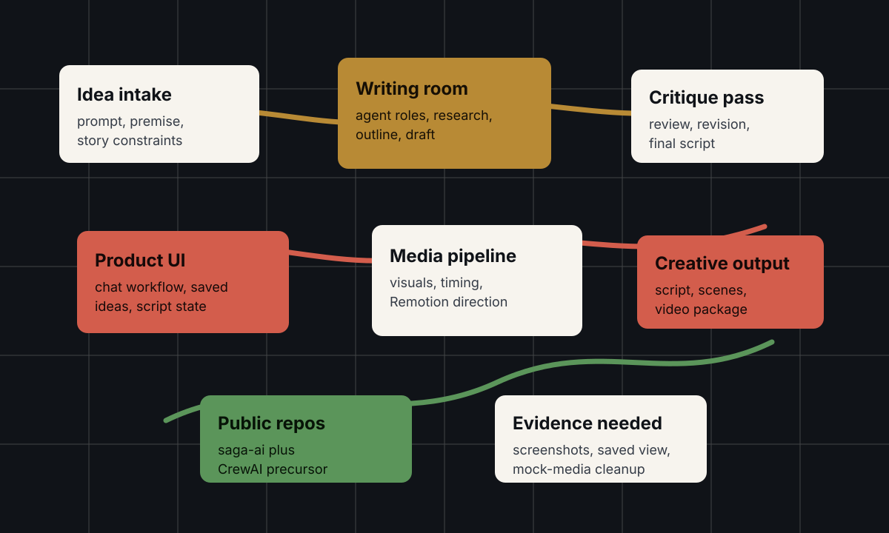
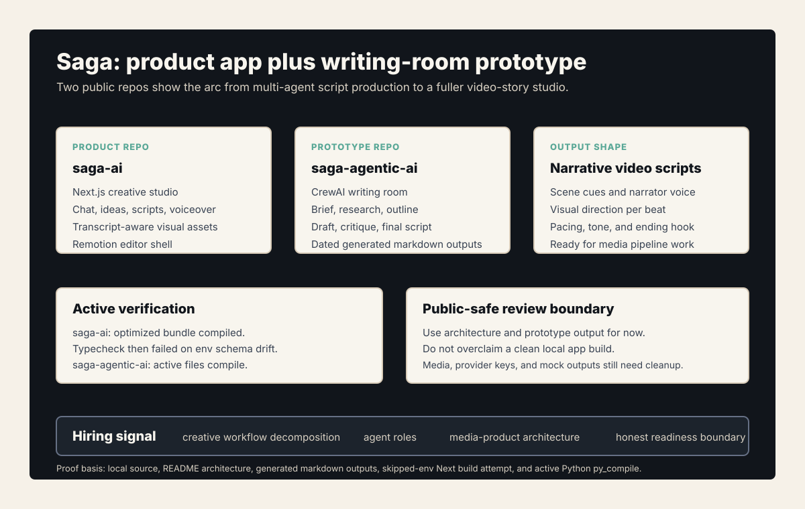
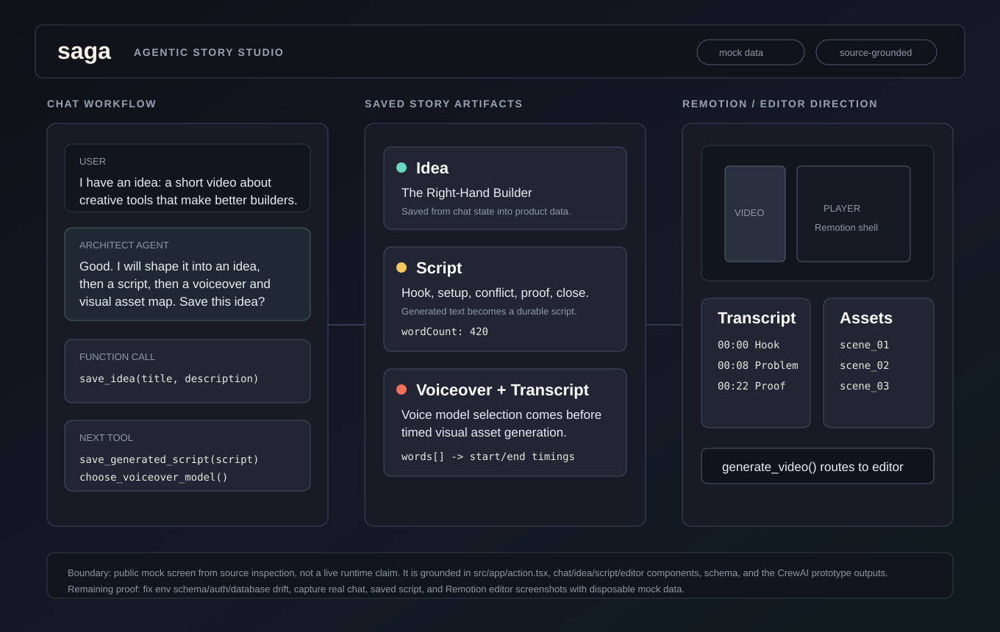
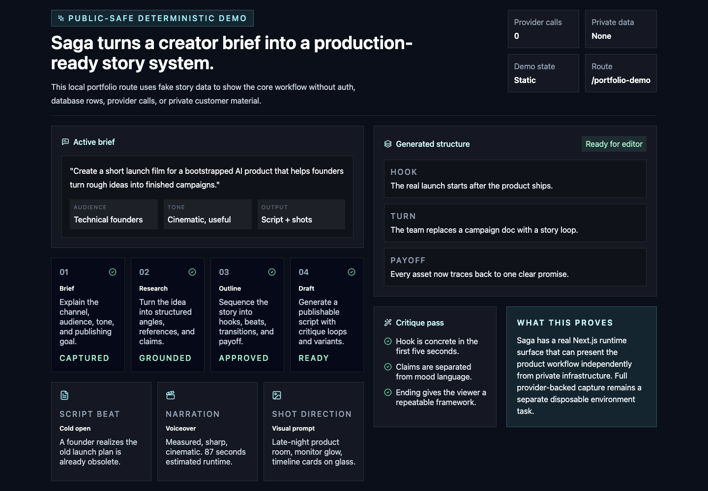
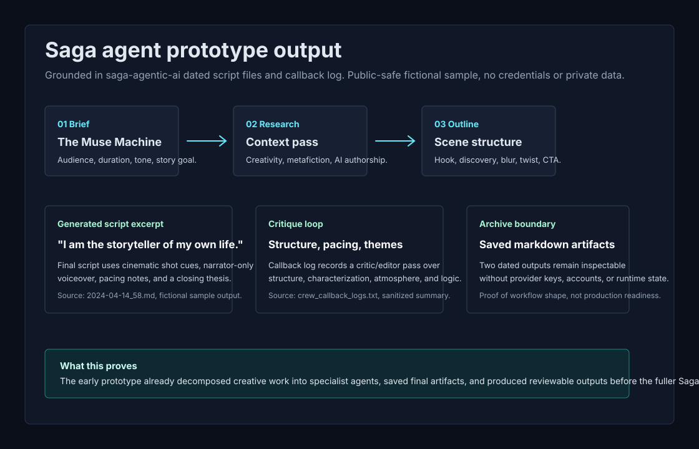

Problem
AI story tools often stop at one-shot generation. A useful creative studio needs a repeatable workflow: brief, research, outline, draft, critique, final script, saved ideas, product state, and a path toward media output.
What I Built
Saga combines two public repos under gorkamolero. saga-ai is the canonical product direction for an agentic video-story creation studio with workflow, AI functions, media pipeline, and product framing. saga-agentic-ai is the earlier CrewAI writing-room prototype: brief, research, outline, draft, critique, final script, and archive flow.
- Agent workflowWriting-room roles, structured generation, critique, revision, and final script output.
- Product surfaceChat workflow, saved scripts or ideas, product UI, and stateful creative work.
- Media directionVideo-story product framing, media pipeline, and Remotion/editor direction.
System Architecture




/portfolio-demo. It is a deterministic local route with fake story data, zero provider calls, no auth, no database rows, and no private customer material; provider-backed screenshots remain a separate disposable-environment task.
saga-agentic-ai. It shows that the earlier CrewAI writing room produced dated, inspectable script artifacts and a critique loop before the fuller product UI, while avoiding provider keys, account data, or private runtime state.Technical Decisions
- Represent creative work as a staged workflow instead of a single prompt response.
- Use the CrewAI prototype as a precursor to the productized Saga application.
- Make agent roles legible so the output can be inspected, revised, and defended.
- Tie story generation to product UI and media pipeline direction instead of leaving it as raw text.
What This Proves
Saga shows agentic product thinking in a creative domain: structured multi-step generation, user-facing workflow, reusable story artifacts, and the judgment to turn an agent prototype into a product direction.
Public Evidence
- Public repos:
gorkamolero/saga-aiandgorkamolero/saga-agentic-ai. - Both READMEs upgraded and pushed.
- Bullet bank and profile data include Saga as creative AI proof.
- Product repo now reaches a successful warning-free production build with dummy non-secret provider values after closing the
NOVITA_API_KEYenv schema drift. - Deterministic public-safe runtime route captured from
/portfolio-demowith fake story data and no provider, auth, or database dependency. - Agent prototype output proof added from dated markdown script artifacts and callback-log evidence.
- Active prototype files pass Python compile; dead-code folder has known syntax debt.
- Source-grounded mock workflow screen added from product components and prototype outputs.
- Proof transcript — available on request.
Review Boundary
Review generated scripts, mock media, prompt examples, third-party assets, and stale demo content before using Saga as a heavy public pin.